Autor: Łukasz Stodółka
W tej części zasymulowano n-krotny rzut uczciwą sześcienną kostką dla różnych wartości n oraz wyznaczono średnią próbki.
| n | Średnia próbki |
|---|---|
| 5 | 4.0000 |
| 10 | 2.6000 |
| 15 | 3.1333 |
| 20 | 3.5500 |
| 50 | 3.5200 |
| 100 | 3.3700 |
Wniosek:
Dla małych wartości n średnia próbki może się wyraźnie wahać, natomiast przy większych próbach powinna stabilizować się wokół wartości oczekiwanej.
Na wykresie pokazano, jak zmienia się średnia próbki w zależności od liczby rzutów. Pozioma linia odniesienia odpowiada teoretycznej wartości oczekiwanej dla uczciwej kostki, czyli 3.5.
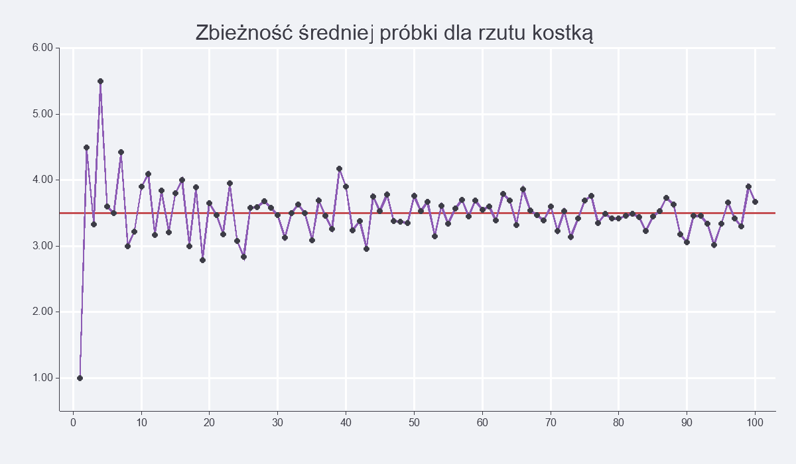
Zbieżność średniej próbki dla rzutu kostką
Wniosek:
Wraz ze wzrostem liczby rzutów średnia próbki zbliża się do 3.5, co jest zgodne z prawem wielkich liczb.
W tej części 200 razy powtórzono eksperyment polegający na wykonaniu 100 rzutów uczciwą monetą. W każdym powtórzeniu zliczano liczbę uzyskanych orłów.
| Statystyka | Wartość |
|---|---|
| Średnia | 50.52 |
| Mediana | 50.00 |
| Minimum | 34.00 |
| Maksimum | 63.00 |
| Q1 | 47.00 |
| Q3 | 54.00 |
| Wariancja | 21.99 |
| Odchylenie std. | 4.69 |
| CV (%) | 9.28 |
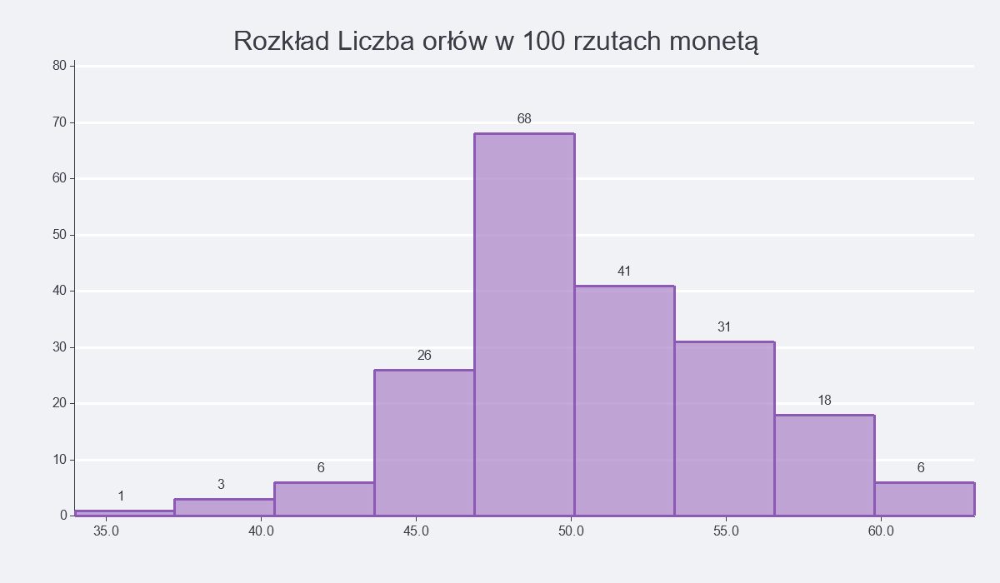
Rozkład Liczba orłów w 100 rzutach monetą
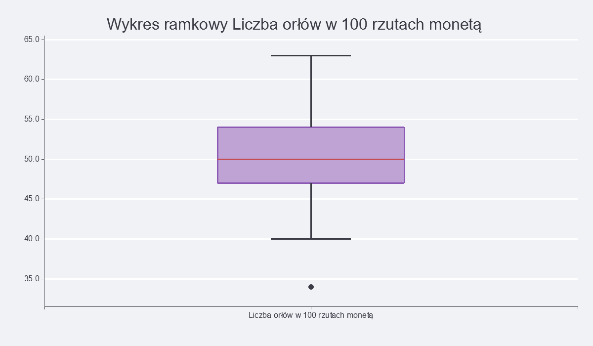
Wykres ramkowy Liczba orłów w 100 rzutach monetą
Wniosek:
Rozkład liczby orłów koncentruje się wokół wartości około 50, co odpowiada intuicji dla uczciwej monety.
Wygenerowano próbki z rozkładu wykładniczego Exp(2) dla n = 5, 10, 50, 100 i obliczono średnią próbki. Dla tego rozkładu wartość oczekiwana wynosi 1/2, a wariancja średniej próbki wynosi 1/(4n).
| n | Średnia próbki | μ_n | σ²_n |
|---|---|---|---|
| 5 | 0.2351 | 0.5000 | 0.0500 |
| 10 | 0.3764 | 0.5000 | 0.0250 |
| 50 | 0.4228 | 0.5000 | 0.0050 |
| 100 | 0.4511 | 0.5000 | 0.0025 |
Wniosek:
Empiryczne średnie są zbliżone do wartości teoretycznej 0.5, a wariancja średniej maleje wraz ze wzrostem liczności próby.
Dla każdego n doświadczenie powtórzono 200 razy i narysowano histogram standaryzowanej średniej. Na wykres nałożono gęstość rozkładu normalnego N(0,1).
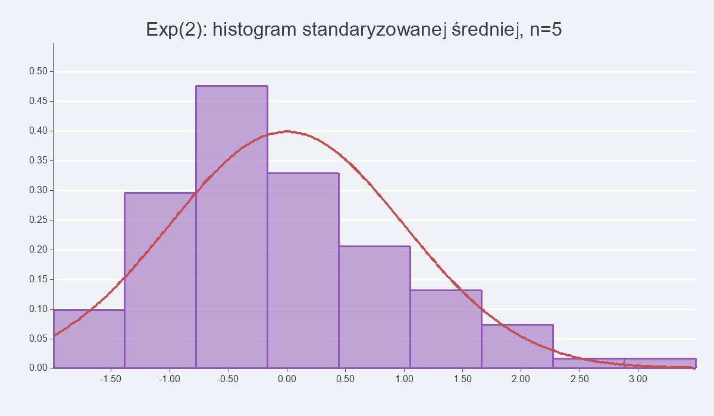
Exp(2): histogram standaryzowanej średniej, n=5
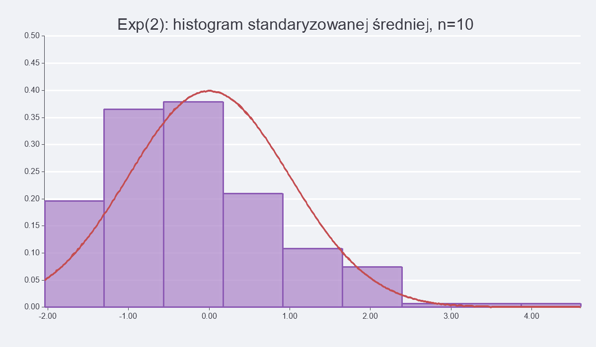
Exp(2): histogram standaryzowanej średniej, n=10
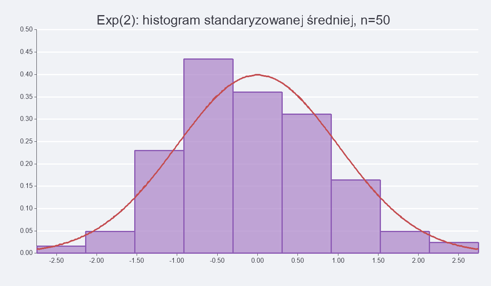
Exp(2): histogram standaryzowanej średniej, n=50
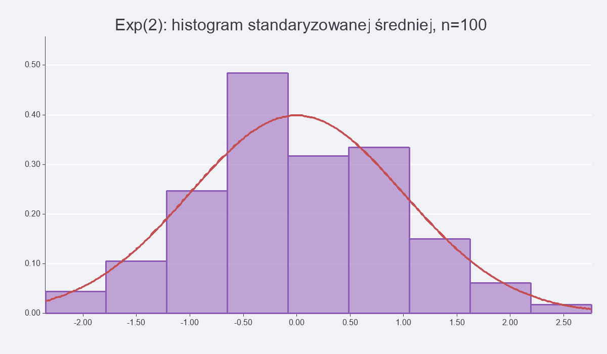
Exp(2): histogram standaryzowanej średniej, n=100
Wniosek:
Wraz ze wzrostem n rozkład standaryzowanej średniej coraz lepiej przybliża rozkład normalny, co potwierdza centralne twierdzenie graniczne.
Powtórzono analizę z punktów (a) i (b) dla rozkładu Poissona z parametrem 2. W tym przypadku wartość oczekiwana wynosi 2, a wariancja średniej próbki wynosi 2/n.
| n | Średnia próbki | μ_n | σ²_n |
|---|---|---|---|
| 5 | 2.8000 | 2.0000 | 0.4000 |
| 10 | 1.7000 | 2.0000 | 0.2000 |
| 50 | 1.9600 | 2.0000 | 0.0400 |
| 100 | 2.0500 | 2.0000 | 0.0200 |
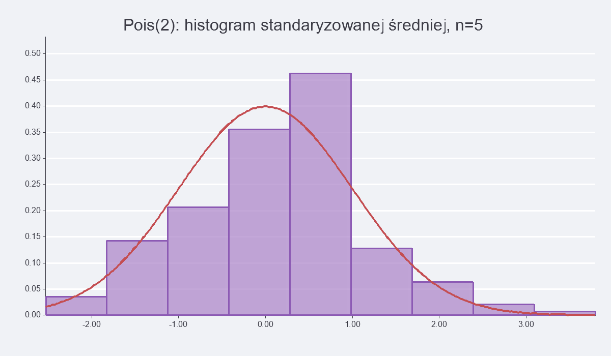
Pois(2): histogram standaryzowanej średniej, n=5
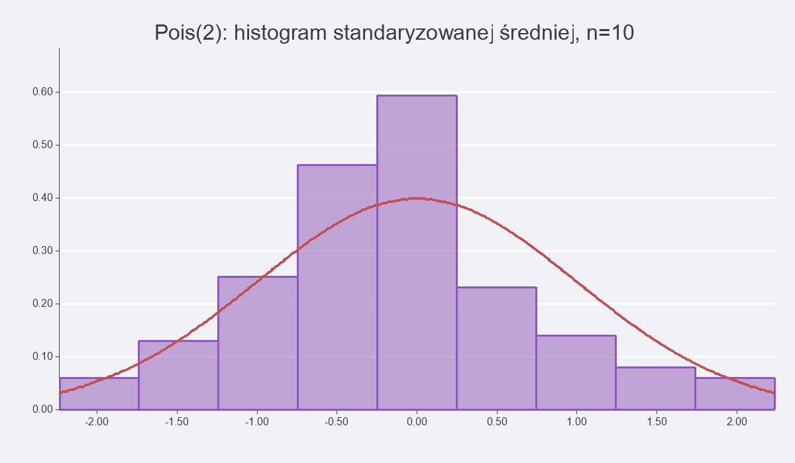
Pois(2): histogram standaryzowanej średniej, n=10
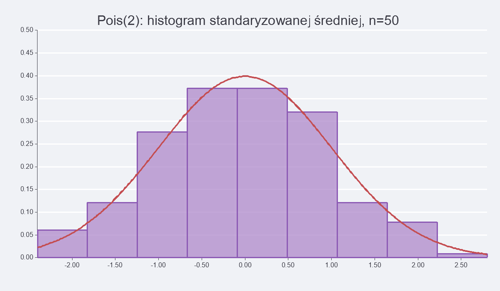
Pois(2): histogram standaryzowanej średniej, n=50
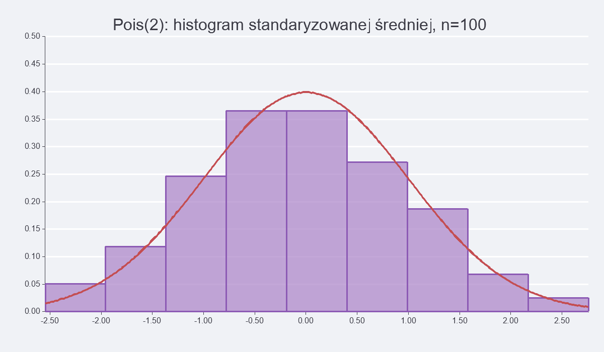
Pois(2): histogram standaryzowanej średniej, n=100
Wniosek:
Również dla rozkładu Poissona standaryzowana średnia zbiega rozkładem do N(0,1) wraz ze wzrostem n.
Dane ze zbioru income.dat potraktowano jako pełną populację. Dla kilku rozmiarów próby porównano średnią populacji ze średnimi wybranych prób losowych.
| n | Średnia próby | Średnia populacji | Różnica |
|---|---|---|---|
| 10 | 26860.2000 | 37864.6095 | 11004.4095 |
| 50 | 54382.6000 | 37864.6095 | 16517.9905 |
| 100 | 36127.2700 | 37864.6095 | 1737.3395 |
| 500 | 38421.4180 | 37864.6095 | 556.8085 |
Wniosek:
Wraz ze wzrostem liczności próby średnia próbki zwykle lepiej przybliża średnią całej populacji, co stanowi ilustrację prawa wielkich liczb.
Porównano histogram zarobków całej populacji z histogramami kilku prób losowych o różnych rozmiarach.
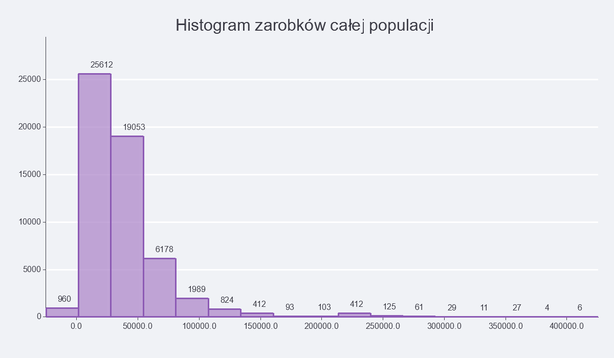
Histogram zarobków całej populacji
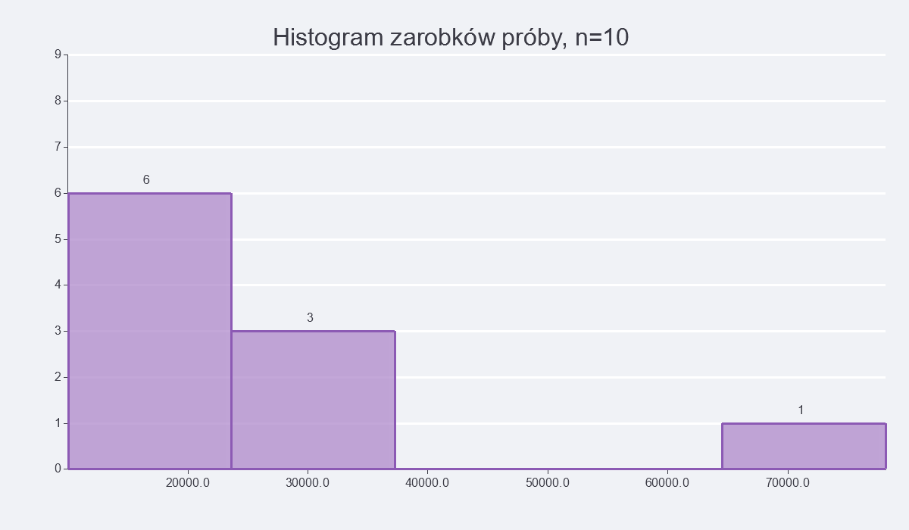
Histogram zarobków próby, n=10
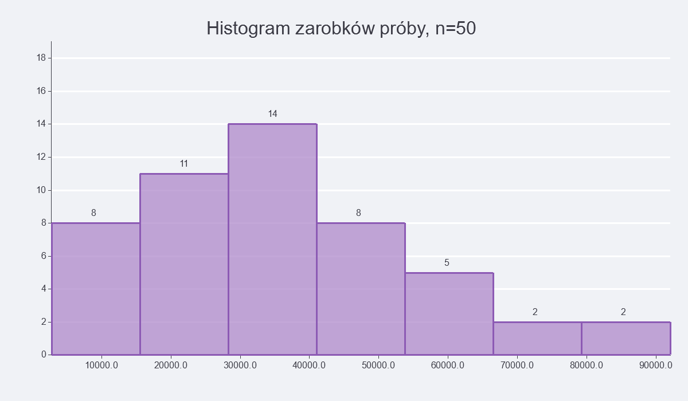
Histogram zarobków próby, n=50
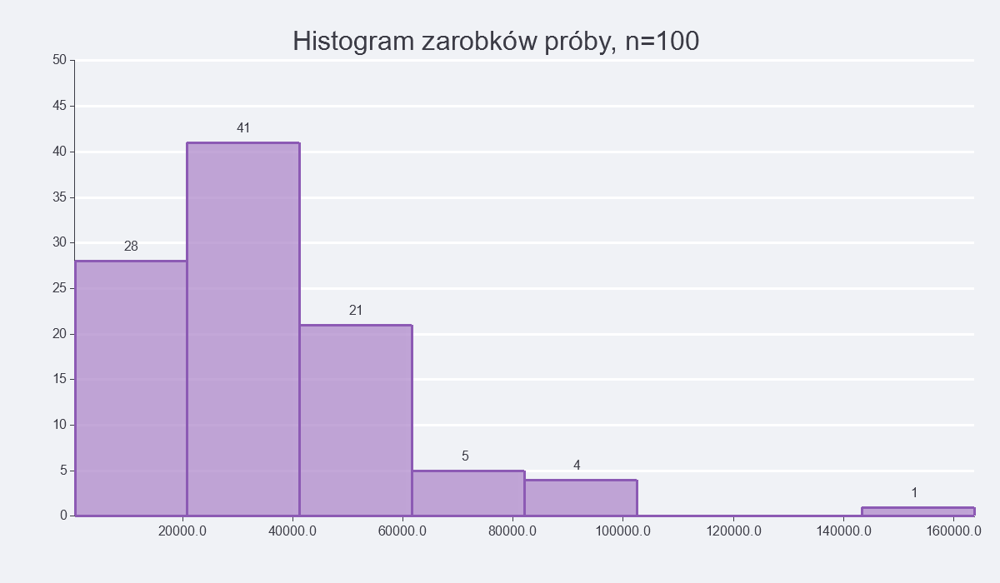
Histogram zarobków próby, n=100
Wniosek:
Dla małych prób histogram może znacząco odbiegać od histogramu populacji, natomiast przy większych próbach kształt rozkładu staje się coraz bardziej zbliżony do rozkładu całej populacji.
Dla różnych liczności próby wielokrotnie losowano próbki i obliczano ich średnie. Następnie zbadano rozkład średnich próbkowych.
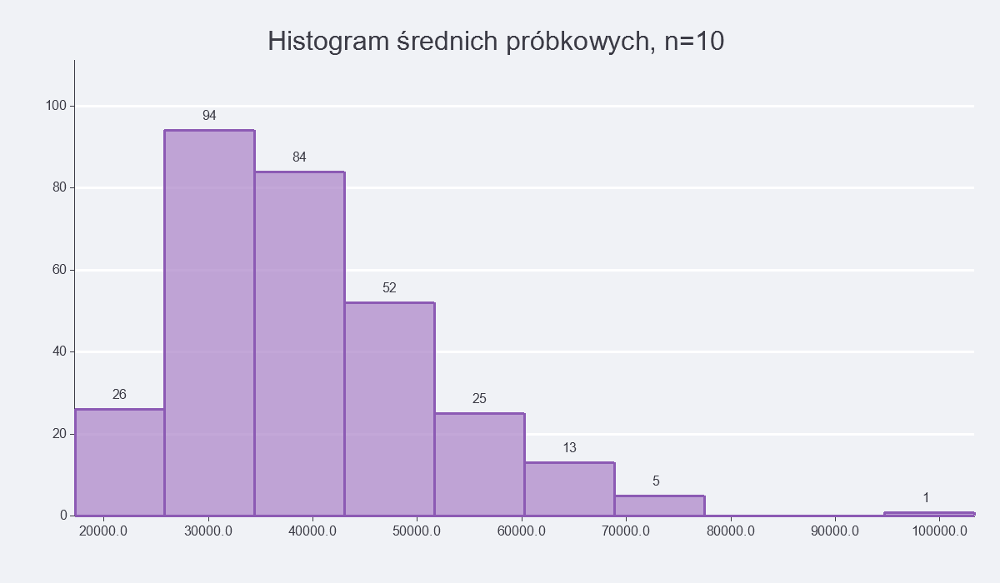
Histogram średnich próbkowych, n=10
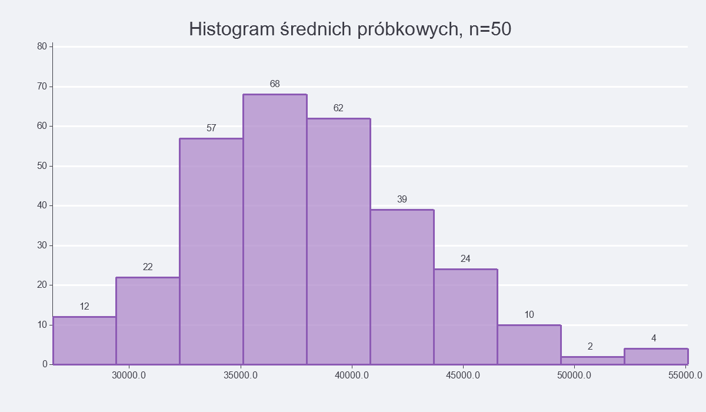
Histogram średnich próbkowych, n=50
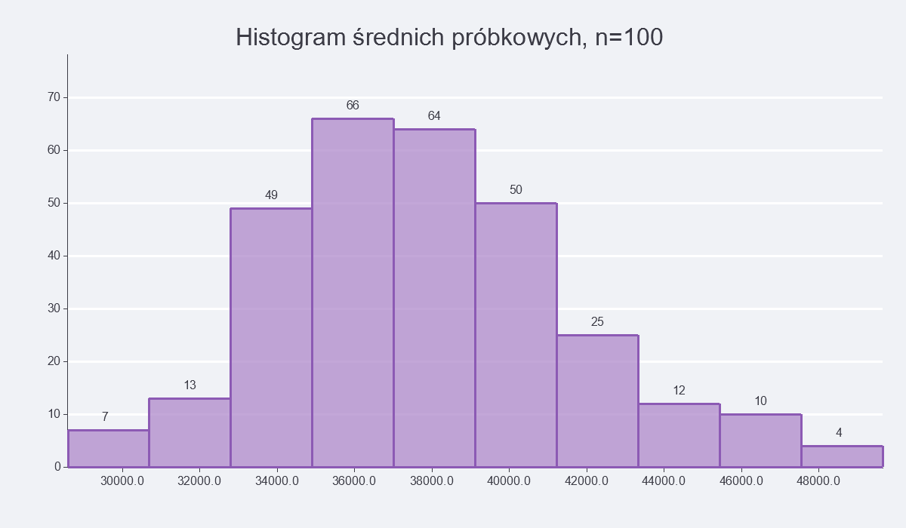
Histogram średnich próbkowych, n=100
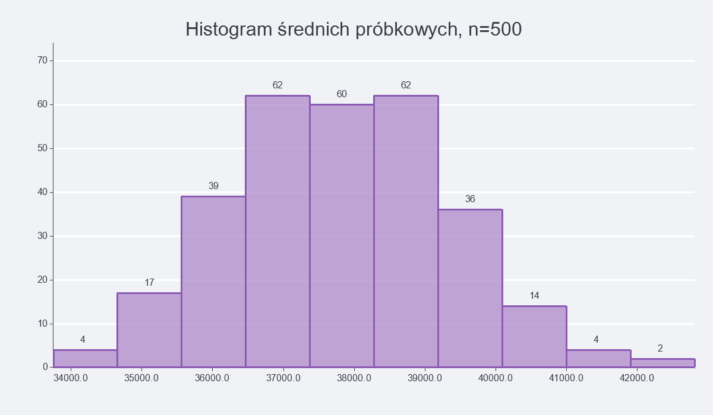
Histogram średnich próbkowych, n=500
Wniosek:
Rozkład średnich próbkowych staje się coraz bardziej skupiony wokół średniej populacji wraz ze wzrostem n. Jest to zgodne z faktem, że odchylenie standardowe średniej maleje jak σ/√n.